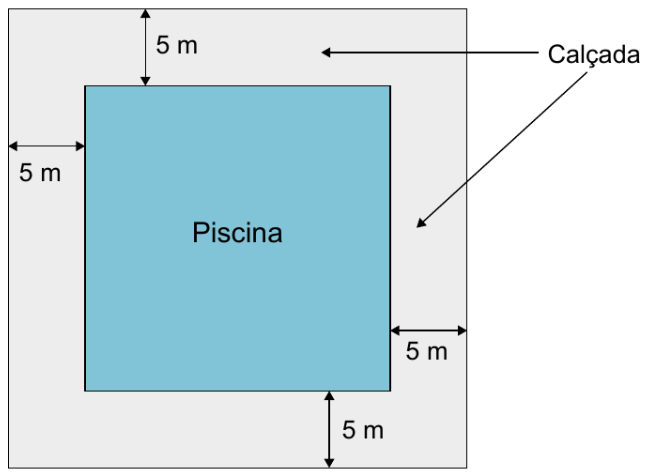

Questões selecionadas · 11 itens · Dificuldade 1–4
Dirigir após ingerir bebidas alcoólicas é uma atitude extremamente perigosa, uma vez que, a partir da primeira dose, a pessoa já começa a ter perda de sensibilidade de movimentos e de reflexos. Apesar de a eliminação absorção do álcool depender de cada pessoa e como o organismo consegue metabolizar a substância, ao final da primeira hora após a ingestão, a concentração de álcool ( C ) no sangue corresponde a aproximadamente 90% da quantidade ( q ) de álcool ingerida, e a eliminação total dessa concentração pode demorar até 12 horas. Nessas condições, ao final da primeira hora após a ingestão da quantidade q de álcool, a concentração C dessa substância no sangue é expressa algebricamente por
Os 100 funcionários de uma empresa estão distribuídos em dois setores: Produção e Administração. Os funcionários de um mesmo setor recebem salários com valores iguais. O quadro apresenta a quantidade de funcionários por setor e seus respectivos salários.
| Setor | Quantidade de funcionários | Salário (em real) |
|---|---|---|
| Produção | 75 | 2 000,00 |
| Administração | 25 | 7 000,00 |
A média dos salários dos 100 funcionários dessa empresa, em real, é
Na planta baixa de um clube, a piscina é representada por um quadrado cuja área real mede 400 m². Ao redor dessa piscina, será construída uma calçada, de largura constante igual a 5 m.

Qual é a medida da área, em metro quadrado, ocupada pela calçada?
O estádio do Maracanã passou por algumas modificações estruturais para a realização da Copa do Mundo de 2014, como, por exemplo, as dimensões do ampo retangular. Para se adaptar aos padrões da Fifa, s dimensões do campo foram reduzidas de 110 m × 75 m ara 105 m × 68 m. Disponível em: http://virgula.uol.com.br. Acesso em: 14 ago. 2013 (adaptado). Em quantos metros quadrados a área do campo do Maracanã foi reduzida?
Contratos de vários serviços disponíveis na internet apresentam uma quantidade excessiva de informações. Isso faz com que o tempo necessário para a leitura desses contratos possa ser longo. O quadro apresenta uma amostra do tempo considerado necessário para a leitura completa do contrato de alguns serviços digitais.
| Tipo de serviço | Tempo necessário para a leitura completa do contrato (em minutos) |
|---|---|
| A | 36 |
| B | 17 |
| C | 27 |
| D | 13 |
| E | 13 |
| F | 13 |
O tempo médio, em minutos, necessário para a leitura completa de um contrato de serviço dentre os listados no quadro é, com uma casa decimal, aproximadamente
Uma doceira vende e entrega, em seu bairro, porções de 100 g de docinhos de aniversário. Atualmente, a taxa única de entrega é R$ 10,00, e o valor cobrado por uma porção é R$ 25,00. Por uma estratégia de vendas, a partir da próxima semana, a taxa única de entrega será R$ 15,00 e um novo valor será cobrado por uma porção, de maneira que o valor total a ser pago por um cliente na compra de 5 porções permaneça o mesmo. A partir da próxima semana, qual será o novo valor cobrado, em real, por uma porção?
No atletismo, um grande desafio da prova de 100 metros rasos é a sua conclusão num tempo abaixo da marca de referência dos 10,00 segundos. Vários atletas já alcançaram esse feito. Em 2009, o jamaicano Usain Bolt estabeleceu o recorde mundial masculino dessa prova, com o tempo de 9,58 segundos.
Qual é a diferença, em segundo, entre a marca de referência e a marca estabelecida por Usain Bolt em 2009?
O cortisol é um hormônio produzido pelas glândulas adrenais e pode ser considerado um importante marcador do estresse fisiológico. Em um estudo desenvolvido com enfermeiros, foi verificado que a concentração de cortisol salivar em um dia de trabalho, denotada por T, era, em média, 1,59 vezes a concentração de cortisol salivar em um dia de folga, denotada por F.
Nesse estudo, a relação obtida entre T e F foi
O dono de uma sorveteria armazena sorvete em potes de 20 000 cm³. Ele serve o sorvete em taças, em porções de 250 mL.
A quantidade de taças que ele consegue servir a partir de um pote cheio de sorvete é
Uma fábrica de tijolos ecológicos com 3 funcionários, cada um trabalhando 6 horas diárias, produz 720 unidades por dia. Para atender ao crescimento da demanda por esse tipo de tijolo, essa fábrica passou a ter 5 funcionários, cada um trabalhando 9 horas por dia, aumentando, assim, sua capacidade de produção. Todos os funcionários produzem igual quantidade de tijolos a cada hora, independentemente de trabalharem 6 ou 9 horas diárias.
O número de tijolos fabricados diariamente após o aumento da capacidade de produção é
Um estacionamento possui 120 vagas para veículos, e todas essas vagas estão ocupadas. Cada cliente paga uma mensalidade para utilizar uma vaga, que é calculada com base nas despesas mensais do estacionamento e no lucro pretendido. As despesas mensais do estacionamento são: R$ 14 240,00 com manutenção mais R$ 36,00 de seguro por veículo. O lucro do estacionamento é determinado pela diferença do valor arrecadado com as mensalidades pelas despesas efetuadas. A partir do mês seguinte, o valor do seguro por veículo aumentará em 20%, e as despesas com manutenção permanecerão sem alterações. Com isso, o dono do estacionamento reajustará as mensalidades para obter um lucro mensal de R$ 10 000,00. Apesar desse reajuste, todas as vagas continuarão ocupadas.
O valor, em real, da mensalidade reajustada será